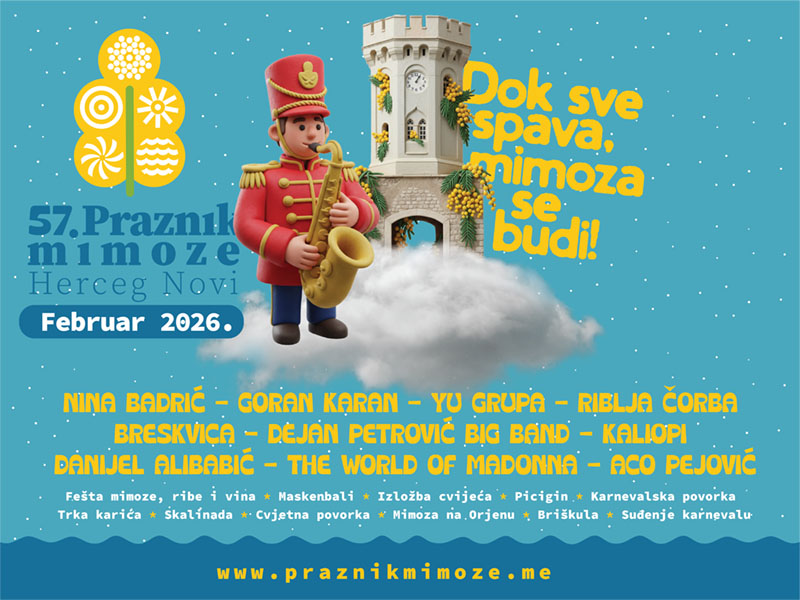
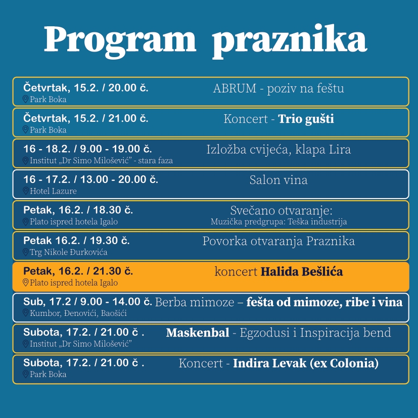
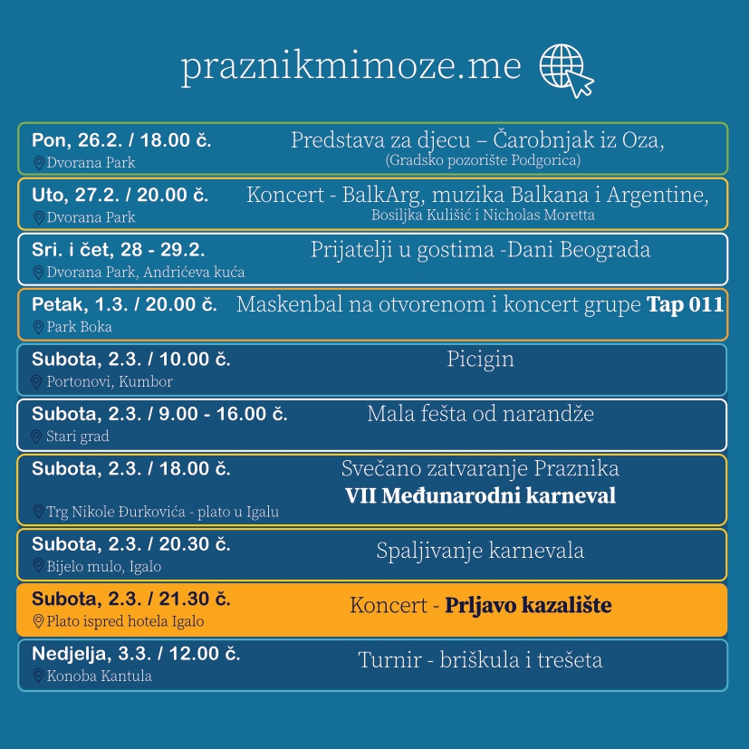
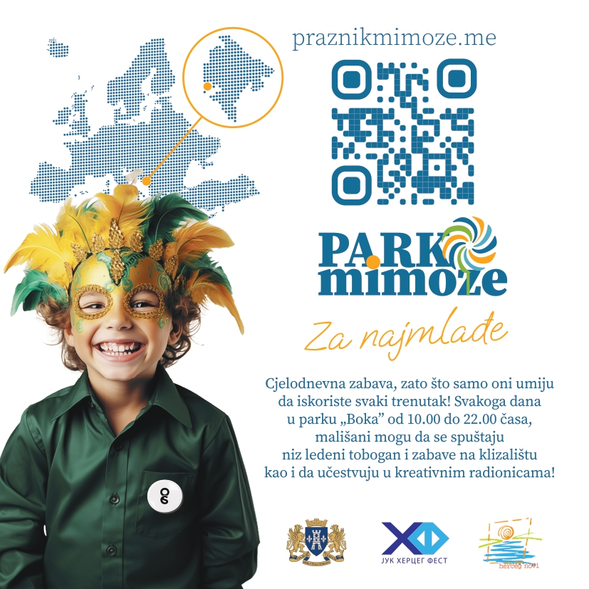
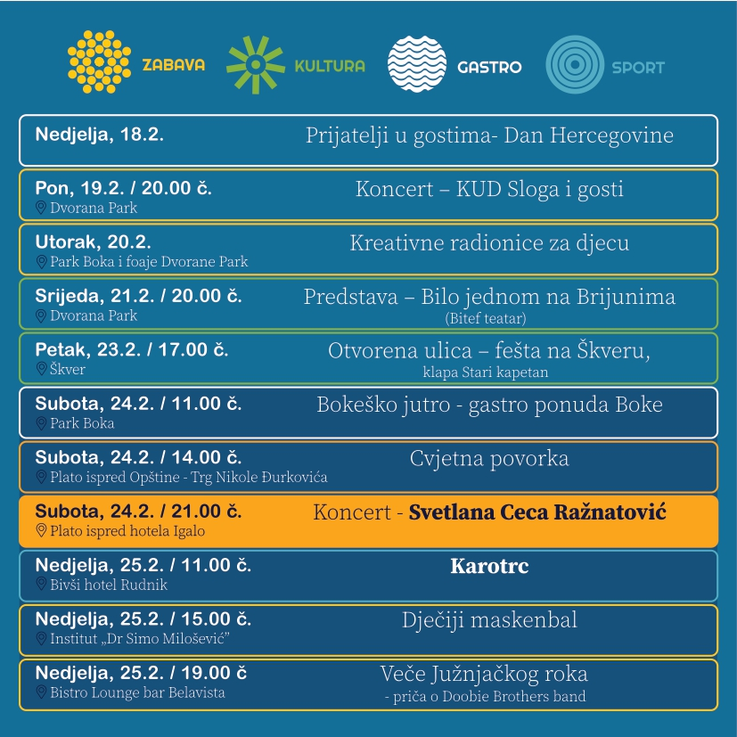

Praznik Mimoze u Herceg Novom - vodič i program za 2027.
Poznat i kao „Dani mimoze" - najstariji festival crnogorskog primorja
Očekivano: sredina februara 2027.
Plato hotela Igalo · Trg Nikole Đurkovića
Od 1969. · 58. izdanje u 2027.
Ažurirano: 5. jul 2026.

Praznik mimoze, Herceg Novi
Dok je veći dio Evrope još u zimskom sivilu, Herceg Novi u februaru
zablista u žutoj boji mimoze. Praznik mimoze - koji
mnogi posjetioci iz regiona znaju i pod imenom
Dani mimoze - najstarija je turističko-zabavna
manifestacija u Crnoj Gori. Pokrenut 1969. godine, festival danas
okuplja desetine hiljada posjetilaca iz regiona i Evrope svake zime.
58. Praznik mimoze očekuje se sredinom februara 2027.
Organizatori zvanične datume i program objavljuju krajem decembra ili
u januaru - objavićemo ih na ovoj stranici čim budu
poznati, pa je sačuvajte među oznakama. U nastavku:
očekivani datumi, program posljednjeg izdanja, istorija, tradicije
i praktični savjeti za posjetu.
Iako zvanični datumi još nisu objavljeni, festival se decenijama
drži istog ritma: počinje sredinom februara i traje do
kraja februara ili početka marta, kroz tri festivalska
vikenda. Pogled na posljednja četiri izdanja jasno pokazuje
obrazac:
Datumi posljednjih izdanja Praznika mimoze
Izdanje
Godina
Datumi
54.
2023.
17. februar - 4. mart
55.
2024.
15. februar - 3. mart
56.
2025.
14. februar - 2. mart
57.
2026.
13. - 28. februar
Na osnovu toga, 58. Praznik mimoze najvjerovatnije počinje
između 12. i 19. februara 2027. Ako planirate posjetu,
ciljajte drugu polovinu februara - a smještaj rezervišite ranije,
jer se kapaciteti u Igalu i Herceg Novom tokom festivala
tradicionalno brzo popune.
Program 57. Praznika Mimoze (februar 2026.)
Posljednje održano izdanje - dok ne izađe program za 2027, evo šta
je festival donio ove godine, kao ilustracija onoga što možete
očekivati:
Prvi vikend
13-15. februar
13. feb - Otvaranje: Defile Gradske muzike i mažoretki, Mjesne muzike Đenović i maškara (19h). Koncert Nine Badrić i Gorana Karana na platou hotela Igalo (20h).
14. feb: Berba mimoze u Kumboru, Đenovićima i Baošićima (9h). Maskenbal u Institutu uz Ansambl Toć i Zanu. Koncert Riblje Čorbe i Yu Grupe na platou hotela Igalo.
15. feb: Koncert Anđele Ignjatović Breskvice i Dejan Petrović Big Banda. Novska skalinada - trka uz gradske stepenice.
Drugi vikend
18-21. februar
18. feb: Koncert Ibrice Jusića, Dvorana Park (20h).
21. feb: Međunarodni karneval - karnevalske grupe i bend The World of Madonna.
Završni vikend
28. februar
Tradicionalno suđenje karnevalu - simbolično spaljivanje krnevola, krivca za sve nevolje protekle godine.
Zatvaranje festivala koncertom Aca Pejovića na platou u Igalu.
Dječiji maskenbal, pozorišni, književni i folklorni programi.
Tokom cijelog festivala
Dodatni sadržaji
Izložba cvijeća (Institut Dr Simo Milošević, 50+ izlagača)
Fešta mimoze, ribe i vina duž rivijere
Turnir u briškuli i trešeti (Konoba Kantula)
Karotrc - trka karića
Susret gradskih muzika Boke
Šta je Praznik mimoze? (Dani mimoze)
Praznik mimoze je festival posvećen cvijetu mimoze koji se u
Herceg Novom održava svakog februara, neprekidno od
1969. godine. U regionu - posebno u Srbiji,
odakle stižu brojne organizovane ture - manifestacija je poznata
i kao „Dani mimoze". Radi se o istom festivalu:
dva imena, jedna fešta.
Kroz decenije, festival je prerastao iz lokalne cvjetne svečanosti
u višenedjeljni kulturni događaj koji spaja tradiciju
- mažoretke, trombonjere, gradsku muziku i berbu mimoze - sa
savremenim muzičkim nastupima najvećih regionalnih zvijezda.
Posljednja izdanja donijela su preko 50 zabavnih,
kulturnih, gastro i sportskih programa duž cijele
hercegnovske rivijere.
Februar je i idealno vrijeme za uživanje u svježim plodovima mora bez
ljetnjih gužvi - duž
Šetališta Pet Danica
restorani tokom festivala nude posebne ribarske specijalitete.
Istorija festivala - od 1969. do danas
Kako je nastao Praznik mimoze
Festival su 1969. godine pokrenuli Turistički savez Boke Kotorske
i Opština Herceg Novi, kao proslavu dolaska proljeća u grad u kojem
mimoza cvjeta usred zime. Ideja je od početka bila turistička:
pokazati da hercegnovska rivijera živi i van ljetnje sezone -
otuda i status najstarije turističke manifestacije u
Crnoj Gori.
Evropski karnevalski grad
Od 1991. godine Herceg Novi je član
Federacije evropskih karnevalskih gradova (FECC),
čime se novski karneval svrstao uz bok velikim evropskim
karnevalskim tradicijama. Međunarodna karnevalska povorka danas je
jedan od najposjećenijih dana festivala - 2026. godine održano je
deveto međunarodno izdanje karnevala.
Praznik mimoze kroz godine - arhiva izdanja
Pregled posljednjih izdanja festivala - datume, slogane i
najveće muzičke goste dopunjavamo svake godine:
Arhiva izdanja Praznika mimoze - godine, datumi i izvođači
Izdanje
Datumi
Obilježja i najveći koncerti
54. (2023)
17.2 - 4.3.2023.
Povratak festivala u punom obimu; VI Međunarodni karneval.
55. (2024)
15.2 - 3.3.2024.
Halid Bešlić, Indira Levak, Svetlana Ceca Ražnatović, Tap 011, Prljavo kazalište; VII Međunarodni karneval; „Park mimoze" za najmlađe.
56. (2025)
14.2 - 2.3.2025.
Slogan „Herceg Novi zove - fešta, sunce, more"; Ana Bekuta, Hanka Paldum, Crvena jabuka, Gibonni; VIII Međunarodni karneval; 50+ programa.
57. (2026)
13.2 - 28.2.2026.
Slogan „Dok sve spava, mimoza se budi"; Nina Badrić, Goran Karan, Riblja Čorba, Yu Grupa, Breskvica, Aco Pejović; IX Međunarodni karneval; 60+ programa.
58. (2027)
očekivano: sredina februara
Program i izvođači biće objavljeni krajem 2026. - pratite ovu stranicu.

Program prvog vikenda 55. Praznika mimoze (2024) - svečano otvaranje, povorka i fešta od mimoze, ribe i vina.

Završnica festivala 2024 - VII Međunarodni karneval, spaljivanje karnevala i zatvaranje uz Prljavo kazalište.
Tradicije festivala
Ono što Praznik mimoze čini posebnim nisu samo koncerti - to su
tradicije koje se ponavljaju iz godine u godinu i po kojima
posjetioci festival pamte:
Berba mimoze i fešta od mimoze, ribe i vina
Festival počinje tamo gdje mimoza raste: u Kumboru,
Đenovićima i Baošićima beru se grane mimoze koje će
krasiti povorke i štandove. Duž rivijere se potom nižu
fešte od mimoze, ribe i vina - na štandovima se
dijele pržene ribice, domaće vino i grančice mimoze. Ovo je
najautentičniji dio festivala i najbolji način da osjetite
lokalni duh.
Međunarodni karneval i suđenje karnevalu
Karnevalske grupe iz Crne Gore i Evrope defiluju gradom u
međunarodnoj karnevalskoj povorci, a festival
se tradicionalno zatvara suđenjem karnevalu:
krnevalu (lutki-krivcu) sudi se za sve nevolje protekle godine,
nakon čega slijedi simbolično spaljivanje karnevala
- najfotogeničniji trenutak festivala.
Maskenbal, mažoretke i gradska muzika
Maskenbali u Institutu „Dr Simo Milošević" i na
otvorenom okupljaju maškare svih generacija (posjetioci bez
kostima ponekad plaćaju simboličnu ulaznicu - kostim se isplati!).
Defilei Gradske muzike, mažoretki i trombonjera
čuvaju višedecenijski ceremonijal otvaranja festivala.
Sportski programi
Februar u Herceg Novom je i sportski mjesec:
Novska skalinada (trka uz čuvene gradske
stepenice), Karotrc (trka karića),
međunarodni džudo kup „Mimoza", Mimoza kup u streličarstvu,
turniri u briškuli i trešeti, pa čak i Mimoza Game
Fest za gejmere - festival svake godine širi program
na nove generacije.
Program za djecu
Najmlađi imaju svoj festival u festivalu: dječiji
maskenbal, kreativne radionice, predstave i „Park
mimoze" u parku Boka sa cjelodnevnim programom.

„Park mimoze" - cjelodnevni program za djecu u parku Boka tokom festivala.

Druga festivalska sedmica - cvjetna povorka, Bokeško jutro i dječiji maskenbal (program 2024).
Lokacije - gdje se šta dešava
Festival se odvija na više lokacija duž rivijere, ali dvije su
centralne - i obje su lako dostupne pješke iz Igala:
Plato ispred hotela Igalo
Glavna koncertna pozornica - ovdje se održavaju veliki koncerti otvaranja i zatvaranja festivala. Od naših apartmana stiže se za oko 5 minuta hoda.
Trg Nikole Đurkovića (Herceg Novi)
Polazna tačka svečanih povorki i karnevala, srce gradskih dešavanja.
Institut „Dr Simo Milošević" (Igalo)
Izložba cvijeća sa preko 50 izlagača i tradicionalni maskenbali.
Dvorana Park i park Boka (Herceg Novi)
Koncerti, pozorišne predstave, dječiji programi i gastro manifestacije.
Rivijera: Kumbor, Đenovići, Baošići
Berba mimoze i fešte od mimoze, ribe i vina po mjesnim zajednicama.
Praktični savjeti za posjetioce
Kako doći do Herceg Novog
Avionom: najbliži aerodromi su Tivat (oko 25 km, uz trajekt Kamenari-Lepetane), Dubrovnik-Ćilipi (oko 30 km) i Podgorica (oko 120 km).
Autobusom: direktne linije voze iz Beograda, Novog Sada, Sarajeva i gradova crnogorskog primorja; autobuska stanica je iznad centra grada.
Organizovano: agencije iz Srbije i regiona u februaru nude višednevne ture pod nazivom „Dani mimoze" sa prevozom i smještajem.
Automobilom: parking u centru Herceg Novog je ograničen - tokom festivalskih vikenda dolazite ranije ili birajte smještaj sa parkingom (naši gosti parkiraju besplatno).
Vrijeme u februaru
Herceg Novi ima jednu od najblažih zima na Jadranu - februar
najčešće donosi 10-15°C i mnogo sunčanih dana,
upravo zato mimoza i cvjeta usred zime. Ipak, ponesite slojevitu
odjeću, udobnu obuću (grad je poznat po stepenicama!) i kišobran
za svaki slučaj.
Gdje odsjesti
Najpraktičnija baza je Igalo: do centralnog
festivalskog platoa stiže se za oko 5 minuta hoda, a do Trga
Nikole Đurkovića vodi ravno, ugodno Šetalište
Pet Danica uz more (10-ak minuta hoda, autobusom ili
automobilom još brže). Smještaj se za
festivalske vikende popuni i po mjesec-dva ranije - rezervišite
na vrijeme.
Ono što posjetioci zovu mimozom zapravo je srebrnasta
akacija (Acacia dealbata) - drvo porijeklom iz
Australije koje se preko mediteranskih vrtova odomaćilo na
Jadranu. U Herceg Novom i Boki Kotorskoj pronašlo je idealnu
klimu: cvjeta od januara do marta, kada
rivijeru pretvori u zlatno-žuti đardin.
Grančica mimoze je zaštitni znak festivala - tokom Praznika
mimoze dijeli se posjetiocima na feštama, krasi izloge i
balkone, a najljepše se žuti duž Šetališta Pet Danica i po
vrtovima starih kapetanskih kuća. Ako želite da uhvatite
vrhunac cvjetanja, druga polovina februara je gotovo uvijek
pun pogodak - još jedan razlog zašto se festival održava baš
tada.
58. Praznik mimoze očekuje se sredinom februara 2027.
Posljednja četiri izdanja počinjala su između 13. i 17. februara.
Zvanične datume organizatori objavljuju krajem decembra ili u
januaru - objavićemo ih ovdje čim budu poznati.
Da - Dani mimoze je kolokvijalni naziv za
Praznik mimoze, koji najčešće koriste turističke agencije iz
Srbije i regiona. Radi se o istom festivalu u Herceg Novom.
Na 57. izdanju (2026.) nastupili su Nina Badrić,
Goran Karan, Riblja Čorba,
Yu Grupa, Breskvica i Aco Pejović. Ranije su
nastupali Gibonni, Crvena jabuka, Halid Bešlić, Ceca i Prljavo
kazalište. Izvođači za 2027. biće objavljeni uz zvanični program.
Festival traje preko dvije sedmice, sa programom
raspoređenim kroz tri vikenda i dodatnim sadržajima tokom radnih
dana - koncerti, karneval, izložba cvijeća i gastro fešte.
Centralni događaji odvijaju se na platou ispred hotela
Igalo i na Trgu Nikole Đurkovića, uz
manifestacije duž cijele hercegnovske rivijere - Kumbor, Đenovići
i Baošići.
Većina programa - povorke, izložba cvijeća, koncerti na otvorenom
i karneval - su besplatni. Pojedini specijalni
događaji poput maskenbala mogu imati simboličnu ulaznicu za
posjetioce bez kostima.
Avionom do Tivta (25 km), Podgorice ili
Dubrovnika, pa autobusom ili taksijem; direktne autobuske
linije voze iz Beograda i drugih gradova. Agencije u sezoni
organizuju i grupna putovanja pod nazivom „Dani mimoze".
Blaga mediteranska zima - najčešće 10-15°C uz
dosta sunca; upravo zato mimoza cvjeta usred zime. Ponesite
slojevitu odjeću i kišobran za svaki slučaj.
Najpraktičniji izbor je Igalo - do
festivalskog platoa stiže se za oko 5 minuta hoda, a centar
Herceg Novog je na 10-ak minuta šetnje uz more (autobusom ili
automobilom još brže). Kapaciteti se brzo popune, pa rezervišite
što ranije - idealno već u decembru.
Pišemo iz Igala. Naši
apartmani Monako
nalaze se na 5 minuta hoda od platoa na kojem se festival otvara
i zatvara - Praznik mimoze gledamo uživo svake godine i ovu
stranicu ažuriramo čim organizatori objave novosti. Za tačne
datume i program uvijek provjerite i zvanične izvore festivala.
Rezervacija
Rezervišite smještaj na vrijeme
Interesovanje za Praznik mimoze je ogromno - hoteli i apartmani u Herceg
Novom se tradicionalno brzo popune. Apartmani Monako, 100 m od Blatne
plaže, besplatan parking i WiFi.